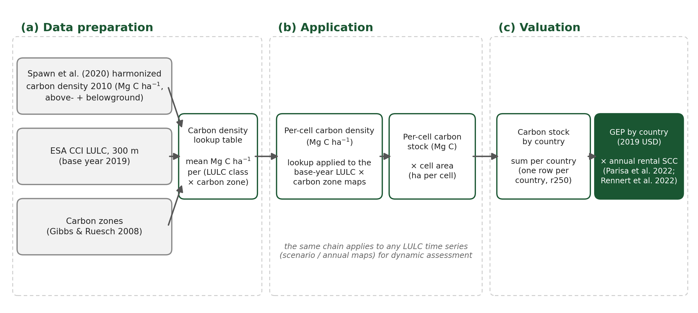

Overview of Ecosystem Service: Terrestrial Carbon Storage
![]()
template, demo
This section outlines how we value carbon sequestration as an ecosystem service within the GEP framework. The analysis focuses specifically on carbon sequestration provided by terrestrial ecosystems, which is appraised in terms of its contribution to climate change mitigation. By quantifying the carbon sequestration capacity of these ecosystems, we aim to capture their role in reducing atmospheric greenhouse gas concentrations, thereby contributing to global climate regulation.
Methods
Estimating Quantity
We followed the methodology outlined in Johnson et al. (2023) to quantify global carbon sequestration. To estimate the quantity of carbon sequestered, we implemented a two-stage modeling framework, as illustrated in panels (a) and (b) of Figure 1.
First, we utilized an advanced global carbon density map developed by Spawn et al. (2020) to update the carbon pool. This dataset consists of harmonized vegetation-specific maps that integrate both aboveground and belowground biomass into a single, comprehensive spatial representation for the year 2010, thereby enabling more accurate assessments of carbon stocks across diverse ecosystems. To construct the carbon pool table or carbon density lookup table, we combined the 300 m land use and land cover (LULC) data from the European Space Agency Climate Change Initiative Land Cover (ESA CCI LC) with the carbon zone map employed by Ruesch and Gibbs (2008). This integrated methodology enhances both the spatial resolution and contextual relevance of carbon stock estimations.
Second, we applied the updated carbon density lookup table and the carbon zone map to a time series of LULC data, also derived from ESA CCI LC, to enable dynamic assessments of carbon storage over time.

Estimating Price
To estimate the value of carbon sequestration, we employed the rental social cost of carbon (SCC) (Parisa et al. 2022) as the pricing metric. Parisa et al. (2022) provides the theoretical rationale for quantifying the value of short-term carbon storage, which corresponds to carbon sequestration. Following this approach, and within the framework of Gross Ecosystem Product (GEP), we estimate the annual value of carbon sequestration as follows:
\[ \text{Carbon Rental Rate} = P_C(t) - P_C(t+1)e^{-r} = P_C(t)\left(1 - e^{-r} \right) \]
where \(P_C(t)\) denotes the social cost of carbon in year \(t\), and \(r\) represents the net discount rate equal to the difference between the discount rate and the rate of growth of carbon prices. This formulation reflects the rental valuation approach, capturing the annualized benefit of temporarily storing one metric ton of CO2 for one year. This measure represents the annualized marginal damage cost of emitting an additional metric ton of CO2, thereby aligning our valuation approach with established climate policy frameworks and principles of intertemporal cost-benefit analysis. We adopt a carbon price of $678.33 per metric ton of carbon (C), corresponding to the mean social cost of CO2 of roughly $185 per metric ton of CO2 estimated by Rennert et al. (2022) (converted to a per-carbon basis by the 44/12 mass ratio). This value is employed for \(P_C(t)\), the carbon price at time \(t\), and a discount rate of 2% is applied, following the same source. The rental rate the model applies is read year by year from the carbon-price series (rental scc r2% in carbon_prices.xlsx); for the base year 2019 it is approximately $13.19 per ton of C. A flat 2% rate applied directly to $678.33 would give $13.43; the difference reflects the net discount rate \(r\) defined above, which nets out the growth in carbon prices.
Valuation
After estimating both the quantity and price of carbon sequestration, the economic value of carbon sequestration, is calculated as:
\[ \text{GEP}_{\text{carbon storage and sequestration}} = Q \cdot P \cdot \lambda = \text{Carbon Storage} \times \text{Rental SCC} \times 1 \]
where \(Q\) represents the quantity of carbon storage (in metric tons), and \(P\) denotes the annual rental SCC per ton. This formulation aligns with the GEP framework, translating biophysical carbon sequestration into monetary value.